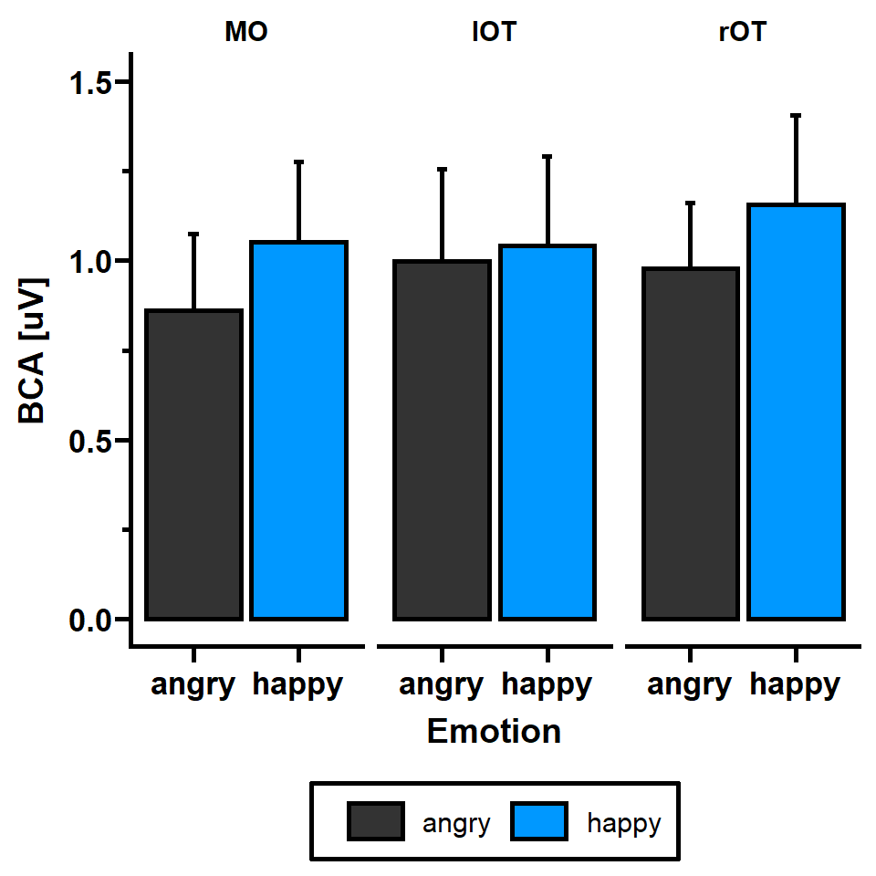
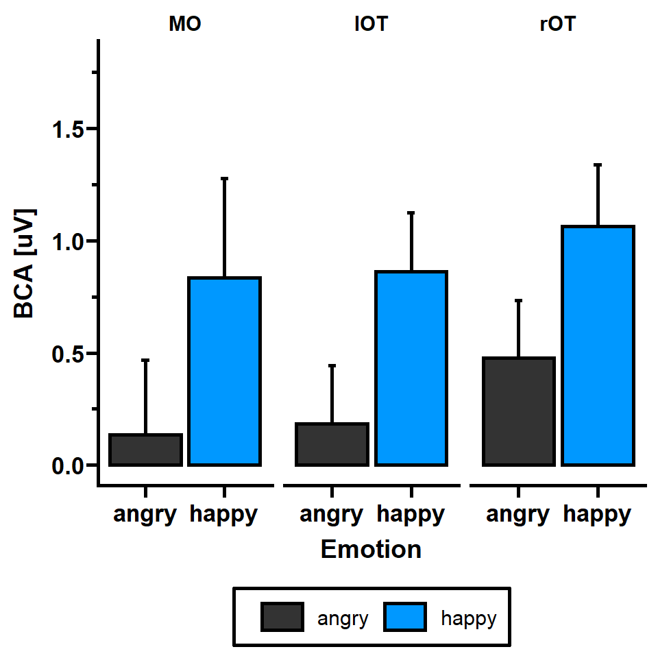
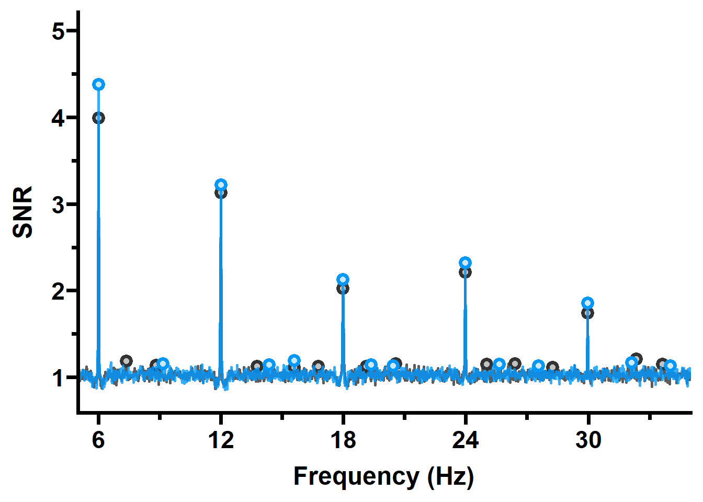
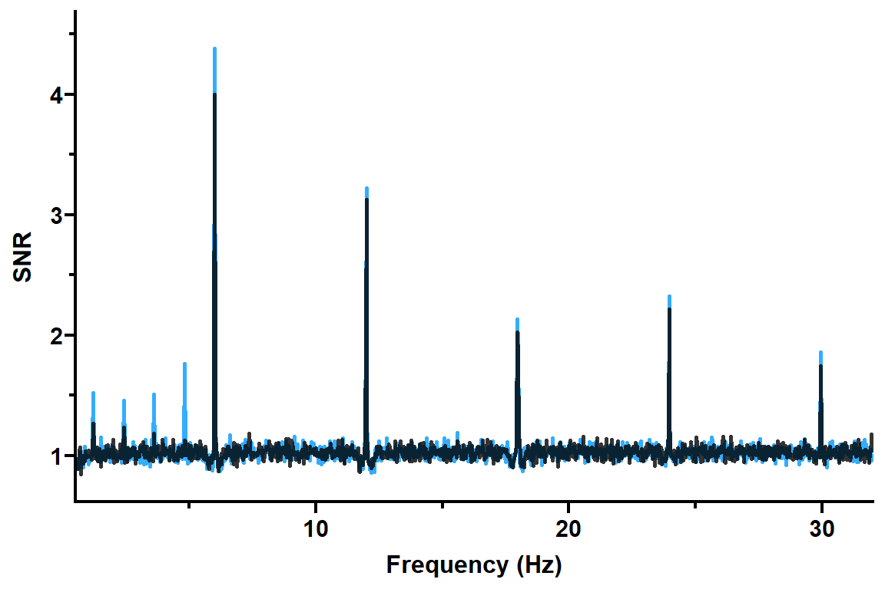
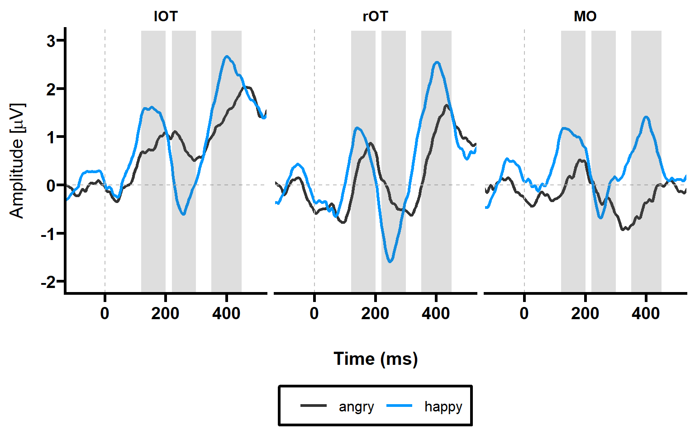
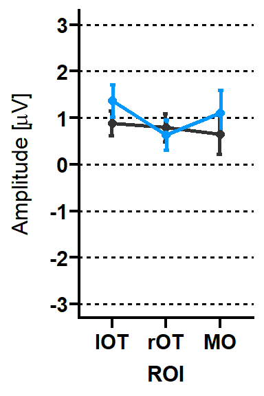
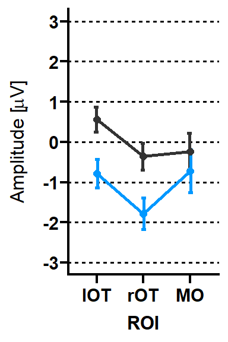
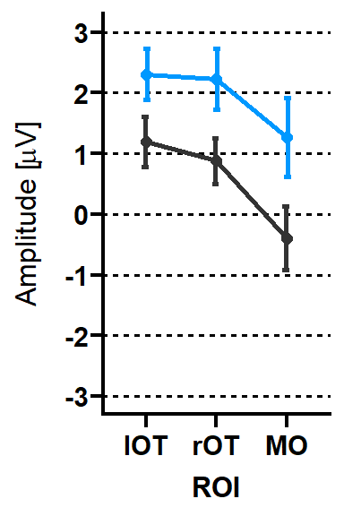
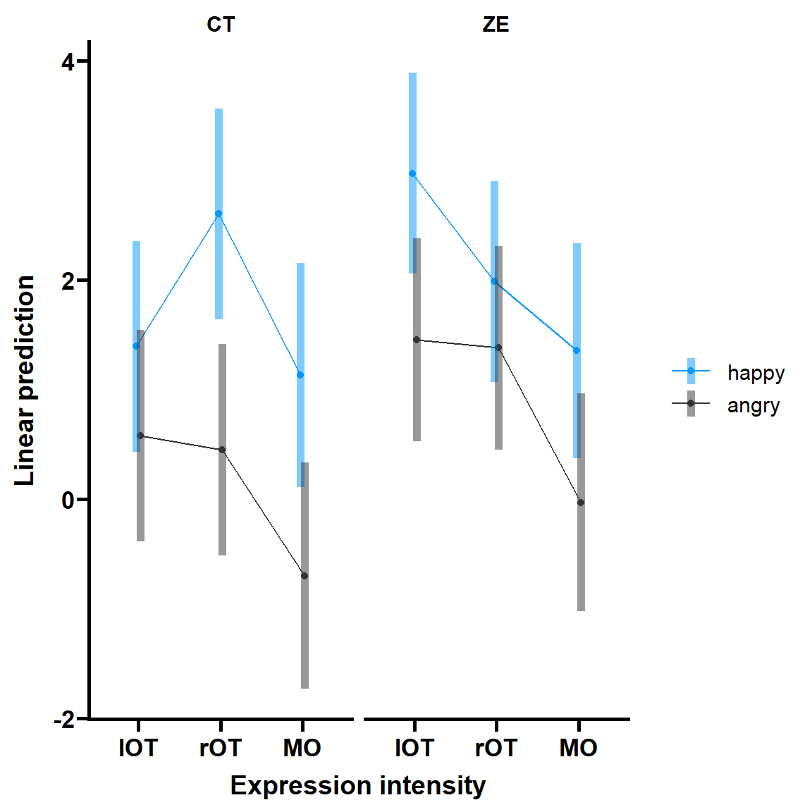

# Separate and order for base and expression change response
ga_z_score_base = ga_z_score_chan[, c(1, 2)]
ga_z_score_base = ga_z_score_base[with(ga_z_score_base, order(-base)), ]
# https://cran.r-project.org/web/packages/kableExtra/vignettes/awesome_table_in_html.html
# Mark channels with very large Z-scores for odd and base condition
ga_z_score_base %>%
mutate(base = cell_spec(base, "html", color = ifelse(base > 15, "blue", "black"))) %>%
kable(format = "html", escape = F) %>%
kable_styling(bootstrap_options = c("striped", "hover", "responsive"), position = "center",
font_size = 10, fixed_thead = TRUE)| Channel | base | |
|---|---|---|
| 40 | O1 | 21.938529144065 |
| 39 | PO8 | 17.9407217308481 |
| 38 | PO7 | 17.0301407346026 |
| 35 | PO10 | 14.3020289824664 |
| 34 | PO9 | 12.9022291902794 |
| 37 | PO4 | 12.6398398026333 |
| 33 | P8 | 12.1667778589974 |
| 32 | P7 | 10.6472560374546 |
| 36 | PO3 | 10.4502230269281 |
| 31 | P4 | 7.84075776737395 |
| 29 | Pz | 7.63572401387207 |
| 16 | FC2 | 7.4745912324953 |
| 15 | FC1 | 6.91061551500047 |
| 14 | Cz | 6.87278276757948 |
| 27 | TP7 | 6.54496465201962 |
| 17 | C3 | 6.50248038650017 |
| 5 | Fz | 6.46740306868176 |
| 2 | Fp2 | 6.36355106706095 |
| 21 | A1 | 6.26590064087793 |
| 18 | C4 | 6.10097631765467 |
| 28 | TP8 | 6.09642503537515 |
| 3 | AF3 | 6.04176497069393 |
| 4 | AF4 | 6.03750838138719 |
| 11 | FC6 | 6.03238734783157 |
| 22 | A2 | 5.93635496515387 |
| 26 | CP6 | 5.88944197493613 |
| 30 | P3 | 5.71327487335233 |
| 7 | F4 | 5.6933803464303 |
| 10 | FC5 | 5.62754628575785 |
| 1 | Fp1 | 5.59886655832199 |
| 6 | F3 | 5.53143944173166 |
| 9 | F8 | 5.48705078809569 |
| 13 | FT8 | 5.15556578566587 |
| 8 | F7 | 5.08077186056517 |
| 12 | FT7 | 4.86250355823987 |
| 20 | T8 | 4.86221874098769 |
| 42 | Oz | 4.77545200990646 |
| 24 | CP2 | 4.32420407121028 |
| 41 | O2 | 4.28641899173867 |
| 19 | T7 | 4.00404060198052 |
| 23 | CP1 | 3.89219373666011 |
| 25 | CP5 | 3.86887065745716 |
# Separate and order for base and expression change response
ga_z_score_expr = ga_z_score_chan[, c(1, 3)]
ga_z_score_expr = ga_z_score_expr[with(ga_z_score_expr, order(-expr)), ]
ga_z_score_expr %>%
mutate(expr = cell_spec(expr, "html", color = ifelse(expr > 5, "blue", "black"))) %>%
kable(format = "html", escape = F) %>%
kable_styling(bootstrap_options = c("striped", "hover", "responsive"), position = "center",
font_size = 10, fixed_thead = TRUE)| Channel | expr | |
|---|---|---|
| 33 | P8 | 6.77755283071802 |
| 37 | PO4 | 5.84390999769541 |
| 31 | P4 | 5.63703891482258 |
| 32 | P7 | 5.06463739035935 |
| 39 | PO8 | 4.53694455104284 |
| 36 | PO3 | 3.83721953245741 |
| 26 | CP6 | 3.78083044380648 |
| 35 | PO10 | 3.70092697026666 |
| 38 | PO7 | 3.39850484333499 |
| 30 | P3 | 3.28002822110065 |
| 40 | O1 | 3.25909231539684 |
| 11 | FC6 | 2.79856100365891 |
| 14 | Cz | 2.71094133345687 |
| 18 | C4 | 2.66994847312755 |
| 15 | FC1 | 2.64673233226578 |
| 16 | FC2 | 2.58025394884816 |
| 21 | A1 | 2.50069120808104 |
| 24 | CP2 | 2.458797096696 |
| 17 | C3 | 2.42217754244678 |
| 34 | PO9 | 2.3067099275539 |
| 5 | Fz | 2.30058910472952 |
| 20 | T8 | 2.16313634115629 |
| 22 | A2 | 2.09424379686555 |
| 13 | FT8 | 1.96916312563744 |
| 10 | FC5 | 1.82682069090403 |
| 9 | F8 | 1.82062302662541 |
| 29 | Pz | 1.80524713101303 |
| 7 | F4 | 1.74085836617496 |
| 6 | F3 | 1.66117999186592 |
| 1 | Fp1 | 1.65621941504295 |
| 4 | AF4 | 1.5634453898966 |
| 2 | Fp2 | 1.50729889007216 |
| 23 | CP1 | 1.49873445837714 |
| 25 | CP5 | 1.49364020551958 |
| 3 | AF3 | 1.49107146120585 |
| 28 | TP8 | 1.48058926807878 |
| 8 | F7 | 1.45999723614915 |
| 12 | FT7 | 1.31061195764195 |
| 41 | O2 | 1.27362257013056 |
| 27 | TP7 | 1.21972361060138 |
| 42 | Oz | 1.17720641195909 |
| 19 | T7 | 1.03980980069079 |
# Create data summary
max_base_plot_emotion = data_summary(max_base_plot, varname="bca", groupnames=c("ROI", "emotion"))
# Plot Base response differences for emotions
max_base_emotions = ggplot(max_base_plot_emotion, aes(x=emotion, y=bca, fill = emotion))+
geom_bar(stat="identity", color="black", position = "dodge2", size = 1)+
geom_errorbar(aes(ymin=bca, ymax=bca+se), width=.1, size =1, position = position_dodge(width = 0.9))+
scale_fill_manual(values=c("#333333","#0098ff"))+
scale_y_continuous(limits = c(0,1.5), guide = guide_prism_minor())+
labs(x = "Emotion", y = "BCA [uV]" )+
# ylim(0,2.3)+
theme_prism(base_size = 14)+
theme(legend.position = "bottom",
panel.background = element_rect(fill = "transparent"),
plot.background = element_rect(fill = "transparent", color = NA),
legend.background = element_rect(fill = "transparent"), # get rid of legend bg
legend.box.background = element_rect(fill = "transparent"))+
facet_wrap(~ROI)
max_base_emotions
ggsave("./figures/max_base_emotions.png", bg = "transparent", dpi = 300)
#------------------------------------------------------------------------------------------------------------------------------------------------
# # Subset for base
# max_topo_base = subset(max_topo, manip == "base")
#
# # Add group
# max_topo_base$group = qn_data$group[match(max_topo_base$ID,qn_data$ID,nomatch = NA)]
#
# # Subset for emotions
# max_topo_base_hap = subset(max_topo_base, emotion == "happy")
# max_topo_base_ang = subset(max_topo_base, emotion == "angry")
#
# # Add montage
# max_topo_base_hap = electrode_locations(max_topo_base_hap, electrode = "electrode", drop = FALSE,
# montage = NULL)
#
# max_topo_base_ang = electrode_locations(max_topo_base_ang, electrode = "electrode", drop = FALSE,
# montage = NULL)
#
#
# topo_hap_base_all = ggplot(max_topo_base_hap, aes(x = x, y = y, fill = amplitude, label = electrode)) +
# ggtitle("happy")+
# geom_topo(grid_res = 300, interp_limit = "head", chan_markers = "point", chan_size = 2,
# head_size = 1.5) +
# scale_fill_distiller(palette = "RdBu" , limits = c(0,2)) +
# theme_void() +
# coord_equal() +
# labs(fill = expression(paste("BCA (", mu,"V)")))+
# theme(legend.position = "none")
#
# topo_ang_base_all = ggplot(max_topo_base_ang, aes(x = x, y = y, fill = amplitude, label = electrode)) +
# ggtitle("angry")+
# geom_topo(grid_res = 300, interp_limit = "head", chan_markers = "point", chan_size = 2,
# head_size = 1.5) +
# scale_fill_distiller(palette = "RdBu" , limits = c(0,2)) +
# theme_void() +
# coord_equal() +
# labs(fill = expression(paste("BCA (", mu,"V)"))) +
# theme(legend.position = "none")
#
# # Get legend
# topo_leg = get_legend(ggplot(max_topo_base_ang, aes(x = x, y = y, fill = amplitude, label = electrode)) +
# ggtitle("angry")+
# geom_topo(grid_res = 300, interp_limit = "head", chan_markers = "point", chan_size = 2,
# head_size = 1.5) +
# scale_fill_distiller(palette = "RdBu" , limits = c(0,2)) +
# theme_void() +
# coord_equal() +
# labs(fill = expression(paste("BCA (", mu,"V)"))))
#
# # Combine plots
# fig_max_base_topo_emotions = cowplot::plot_grid(topo_hap_base_all, topo_ang_base_all, topo_leg, nrow = 1, rel_heights = c(1, 1,.2))
# fig_max_base_topo_emotions
#
# # Save plots with transparent background
# ggsave("./figures/max_base_topo_emotions.png", bg = "transparent", dpi = 300) # Convert ID, group & emotion into factor variables
max_base_lmm = max_base_stats %>%
convert_as_factor(ID)
max_base_lmm$emotion = factor(max_base_lmm$emotion, levels = c("happy", "angry"))
max_base_lmm$group = factor(max_base_lmm$group, levels = c("ZE", "CT"))
# Define contrasts for emotion / group
contrasts(max_base_lmm$emotion) = contr.treatment(2)
contrasts(max_base_lmm$group) = contr.treatment(2)
# Define treatment contrast for ROI
contrasts(max_base_lmm$ROI) = contr.treatment(3, base = 2)
# Build full model with new names
mod_base_lmer = lmer(bca ~ group * emotion * ROI + (1 | ID), data = max_base_lmm,
control = lmerControl(calc.derivs = FALSE))
# Calculate and print ANOVA
mod_base_res = anova_stats(mod_base_lmer)
mod_base_res = subset(mod_base_res, select = -c(term, sumsq, meansq, df, etasq, omegasq,
partial.omegasq, epsilonsq, cohens.f, power))
mod_base_res = head(mod_base_res, -1)
knitr::kable(mod_base_res, format = "markdown")| NumDF | DenDF | statistic | p.value | partial.etasq | |
|---|---|---|---|---|---|
| group | 1 | 45 | 0.058 | 0.810 | 0.000 |
| emotion | 1 | 225 | 6.090 | 0.014 | 0.026 |
| ROI | 2 | 225 | 1.321 | 0.269 | 0.011 |
| group:emotion | 1 | 225 | 0.341 | 0.560 | 0.001 |
| group:ROI | 2 | 225 | 0.138 | 0.871 | 0.001 |
| emotion:ROI | 2 | 225 | 0.720 | 0.488 | 0.006 |
| group:emotion:ROI | 2 | 225 | 0.401 | 0.670 | 0.003 |
# Create data summary
max_expr_plot_prep = data_summary(max_expr_plot, varname="bca", groupnames=c("ROI", "emotion"))
# Plot expression change response differences for emotions
max_expr_emotions = ggplot(max_expr_plot_prep, aes(x=emotion, y=bca, fill=emotion)) +
geom_bar(stat="identity", color="black", position = "dodge2", size = 1)+
geom_errorbar(aes(ymin=bca, ymax=bca+se), width=.1, position=position_dodge(0.9), size = 1)+
labs(x = "Emotion", y = "BCA [uV]" )+
scale_fill_manual(values=c("#333333","#0098ff"))+
scale_y_continuous(limits = c(0,1.8), guide = guide_prism_minor())+
theme_prism(base_size = 14)+
theme(legend.position = "bottom",
panel.background = element_rect(fill = "transparent"),
plot.background = element_rect(fill = "transparent", color = NA),
legend.background = element_rect(fill = "transparent"), # get rid of legend bg
legend.box.background = element_rect(fill = "transparent"))+
facet_wrap(~ROI)
# Display plot
max_expr_emotions
# Save plot with transparent background
ggsave("./figures/max_expr_emotions.png", bg = "transparent", dpi = 300)
#------------------------------------------------------------------------------------------------------------------------------------------------
# # Subset for base
# max_topo_expr = subset(max_topo, manip == "expr")
#
# # Add group
# max_topo_expr$group = qn_data$group[match(max_topo_expr$ID,qn_data$ID,nomatch = NA)]
#
# # Subset for emotions
# max_topo_expr_hap = subset(max_topo_expr, emotion == "happy")
# max_topo_expr_ang = subset(max_topo_expr, emotion == "angry")
#
# # Add montage
# max_topo_expr_hap = electrode_locations(max_topo_expr_hap, electrode = "electrode", drop = FALSE,
# montage = NULL)
#
# max_topo_expr_ang = electrode_locations(max_topo_expr_ang, electrode = "electrode", drop = FALSE,
# montage = NULL)
#
# # Happy faces
# topo_hap_expr_all = ggplot(max_topo_expr_hap, aes(x = x, y = y, fill = amplitude, label = electrode)) +
# ggtitle("happy")+
# geom_topo(grid_res = 300, interp_limit = "head", chan_markers = "point", chan_size = 1.5,
# head_size = 1.5) +
# scale_fill_distiller(palette = "RdBu" , limits = c(0,1.8)) +
# theme_void() +
# coord_equal() +
# labs(fill = expression(paste("BCA (", mu,"V)")))+
# theme(legend.position = "none")
#
# # Get legend happy faces
# topo_leg_hap = get_legend(ggplot(max_topo_expr_hap, aes(x = x, y = y, fill = amplitude, label = electrode)) +
# ggtitle("angry")+
# geom_topo(grid_res = 300, interp_limit = "head", chan_markers = "point", chan_size = 1.5,
# head_size = 1.5) +
# scale_fill_distiller(palette = "RdBu" , limits = c(0,1.8)) +
# theme_void() +
# coord_equal() +
# labs(fill = expression(paste("BCA (", mu,"V)"))))
#
#
# # Combine plots
# fig_max_expr_topo_groups_hap = cowplot::plot_grid(topo_hap_expr_all, topo_leg_hap, nrow = 1, rel_heights = c(1, 1,.2))
# fig_max_expr_topo_groups_hap
#
# # Save plots with transparent background
# ggsave("./figures/max_expr_topo_hap.png", bg = "transparent", dpi = 300)
#
# # Angry faces
# topo_ang_expr_all = ggplot(max_topo_expr_ang, aes(x = x, y = y, fill = amplitude, label = electrode)) +
# ggtitle("angry")+
# geom_topo(grid_res = 300, interp_limit = "head", chan_markers = "point", chan_size = 1.5,
# head_size = 1.5) +
# scale_fill_distiller(palette = "RdBu" , limits = c(0,1.8)) +
# theme_void() +
# coord_equal() +
# labs(fill = expression(paste("BCA (", mu,"V)"))) +
# theme(legend.position = "none")
#
# # Get legend angry faces
# topo_leg_ang = get_legend(ggplot(max_topo_expr_ang, aes(x = x, y = y, fill = amplitude, label = electrode)) +
# ggtitle("angry")+
# geom_topo(grid_res = 300, interp_limit = "head", chan_markers = "point", chan_size = 1.5,
# head_size = 1.5) +
# scale_fill_distiller(palette = "RdBu" , limits = c(0,1.8)) +
# theme_void() +
# coord_equal() +
# labs(fill = expression(paste("BCA (", mu,"V)"))))
#
#
# # Combine plots
# fig_max_expr_topo_emotions_ang = cowplot::plot_grid(topo_ang_expr_all, topo_leg_ang, nrow = 1, rel_heights = c(1, 1,.2))
# fig_max_expr_topo_emotions_ang
#
# # Save plots with transparent background
# ggsave("./figures/max_expr_topo_ang.png", bg = "transparent", dpi = 300) # Convert ID, group & emotion into factor variables
max_expr_lmm = max_expr_stats %>%
convert_as_factor(ID)
max_expr_lmm$emotion = factor(max_expr_lmm$emotion, levels = c("happy", "angry"))
max_expr_lmm$group = factor(max_expr_lmm$group, levels = c("ZE", "CT"))
max_expr_lmm$ROI = factor(max_expr_lmm$ROI, levels = c("lOT", "rOT", "MO"))
# Define contrasts for emotion / group
contrasts(max_expr_lmm$emotion) = contr.treatment(2)
contrasts(max_expr_lmm$group) = contr.treatment(2)
contrasts(max_expr_lmm$ROI) = contr.treatment(3, base = 3)
# Build full model with new names
mod_expr_lmer = lmer(bca ~ group * emotion * ROI + (1 | ID), data = max_expr_lmm,
control = lmerControl(calc.derivs = FALSE))
# Calculate and print ANOVA
mod_expr_res = anova_stats(mod_expr_lmer)
mod_expr_res = subset(mod_expr_res, select = -c(term, sumsq, meansq, df, etasq, omegasq,
partial.omegasq, epsilonsq, cohens.f, power))
mod_expr_res = head(mod_expr_res, -1)
knitr::kable(mod_expr_res, format = "markdown")| NumDF | DenDF | statistic | p.value | partial.etasq | |
|---|---|---|---|---|---|
| group | 1 | 45 | 0.834 | 0.366 | 0.003 |
| emotion | 1 | 225 | 52.789 | 0.000 | 0.177 |
| ROI | 2 | 225 | 4.174 | 0.017 | 0.033 |
| group:emotion | 1 | 225 | 0.025 | 0.874 | 0.000 |
| group:ROI | 2 | 225 | 3.115 | 0.046 | 0.025 |
| emotion:ROI | 2 | 225 | 0.148 | 0.863 | 0.001 |
| group:emotion:ROI | 2 | 225 | 0.006 | 0.994 | 0.000 |
# Post-hoc tests
m.roi = emmeans(mod_expr_lmer, "ROI")
roi = contrast(m.roi, "tukey") %>%
broom::tidy() %>%
head(6)
knitr::kable(roi, format = "markdown")| term | contrast | null.value | estimate | std.error | df | statistic | adj.p.value |
|---|---|---|---|---|---|---|---|
| ROI | lOT - rOT | 0 | -0.2453871 | 0.1102437 | 225 | -2.2258597 | 0.0690368 |
| ROI | lOT - MO | 0 | 0.0532028 | 0.1102437 | 225 | 0.4825928 | 0.8796198 |
| ROI | rOT - MO | 0 | 0.2985899 | 0.1102437 | 225 | 2.7084525 | 0.0198436 |
# Choose rates of interest + average across ROI (Vettori et al., 2019)
max_snr_hap_sing_el = subset(max_snr_groups, emotion == "happy")
max_snr_hap_sing_el = subset(max_snr_hap_sing_el, electrode == "P7" | electrode == "P8"|
electrode == "PO3" | electrode == "PO4"|
electrode == "PO7" | electrode == "PO8"|
electrode == "PO9" | electrode == "PO10" |
electrode == "O1" | electrode == "O2"|
electrode == "Oz")
max_snr_hap = aggregate(SNR ~ freq + emotion, max_snr_hap_sing_el, mean)
max_snr_ang_sing_el = subset(max_snr_groups, emotion == "angry")
max_snr_ang_sing_el = subset(max_snr_ang_sing_el, electrode == "P7" | electrode == "P8"|
electrode == "PO3" | electrode == "PO4"|
electrode == "PO7" | electrode == "PO8"|
electrode == "PO9" | electrode == "PO10" |
electrode == "O1" | electrode == "O2"|
electrode == "Oz")
max_snr_ang = aggregate(SNR ~ freq + emotion, max_snr_ang_sing_el, mean)
# For the plot:
# https://mran.microsoft.com/snapshot/2016-03-19/web/packages/ggspectra/vignettes/user-guide.htm
snr_max_emotions = ggplot() +
geom_line(data=max_snr_ang, aes(x=freq, y=SNR),
color="#333333",size=1, alpha=0.8) +
#stat_peaks(data=max_snr_ang, aes(x=freq, y=SNR), # expression change
# colour = "#333333", fill = "#c2c2c2", shape = 21, span = 47, size = 2, stroke = 2) +
stat_peaks(data=max_snr_ang, aes(x=freq, y=SNR), # for base response
colour = "#333333", fill = "#c2c2c2", shape = 21, span = 75, size = 2, stroke = 2) +
geom_line(data=max_snr_hap, aes(x=freq, y=SNR), color="#0098ff",size=1, alpha=0.8) +
#stat_peaks(data=max_snr_hap, aes(x=freq, y=SNR), # expression change
# colour = "#0098ff", fill = "#cceaff", shape = 21, span = 47, size = 2, stroke = 2) +
stat_peaks(data=max_snr_hap, aes(x=freq, y=SNR), # base response
colour = "#0098ff", fill = "#cceaff", shape = 21, span = 75, size = 2, stroke = 2) +
scale_x_continuous(breaks=seq(6,36,6), limits = c(5,35), expand = c(0,0), guide = guide_prism_minor())+ #for base response
scale_y_continuous(breaks=seq(0,5,1), limits = c(0.8,5), guide = guide_prism_minor())+ #for base response
# scale_x_continuous(breaks=seq(0,5.5,1), limits = c(0.5,5.6), expand = c(0,0), guide = guide_prism_minor())+ #for expression change
# scale_y_continuous(breaks=seq(0,2,1), limits = c(0.8,2.1), guide = guide_prism_minor())+ #for expression change
xlab ('Frequency (Hz)') +
theme_prism(base_size = 18) +
expand_limits(x = 0, y = 0)+
theme(panel.background = element_rect(fill = "transparent"),
plot.background = element_rect(fill = "transparent", color = NA)) # bg of the plot
snr_max_emotions
# Save without white background
ggsave("./figures/SNR_max_base.png", bg = "transparent", dpi = 300)# Choose rates of interest + average across ROI (Vettori et al., 2019)
max_snr_hap_sing_el = subset(max_snr_groups, emotion == "happy")
max_snr_hap_sing_el = subset(max_snr_hap_sing_el, electrode == "O1" | electrode ==
"Oz" | electrode == "O2" | electrode == "PO3" | electrode == "PO4" | electrode ==
"PO7" | electrode == "PO8" | electrode == "PO9" | electrode == "PO10" | electrode ==
"P8" | electrode == "P7")
max_snr_hap_base = aggregate(SNR ~ freq + emotion, max_snr_hap_sing_el, mean)
# Choose rates of interest + average across ROI (Vettori et al., 2019)
max_snr_ang_sing_el = subset(max_snr_groups, emotion == "angry")
max_snr_ang_sing_el = subset(max_snr_ang_sing_el, electrode == "O1" | electrode ==
"Oz" | electrode == "O2" | electrode == "PO3" | electrode == "PO4" | electrode ==
"PO7" | electrode == "PO8" | electrode == "PO9" | electrode == "PO10" | electrode ==
"P8" | electrode == "P7")
max_snr_ang_base = aggregate(SNR ~ freq + emotion, max_snr_ang_sing_el, mean)
# For the plot:
# https://mran.microsoft.com/snapshot/2016-03-19/web/packages/ggspectra/vignettes/user-guide.htm
snr_max_groups_base = ggplot() + geom_line(data = max_snr_hap_base, aes(x = freq,
y = SNR), color = "#0098ff", size = 1, alpha = 0.8) + # stat_peaks(data=max_snr_hap_base, aes(x=freq, y=SNR), colour = '#000000', fill
# = '#000000', shape = 19, span = 140, size = 2, stroke = 2)+
geom_line(data = max_snr_ang_base, aes(x = freq, y = SNR), color = "#000000", size = 1,
alpha = 0.8) + # stat_peaks(data=max_snr_ang_base, aes(x=freq, y=SNR), colour = '#808080', fill
# = '#808080', shape = 19, span = 140, size = 2, stroke = 2)+
scale_x_continuous(breaks = seq(0, 32, 10), limits = c(0.5, 32), expand = c(0, 0),
guide = guide_prism_minor()) + scale_y_continuous(limits = c(0.8, 4.5), guide = guide_prism_minor()) +
xlab("Frequency (Hz)") + theme_prism(base_size = 12) + expand_limits(x = 0, y = 0) +
theme(panel.background = element_rect(fill = "transparent"), plot.background = element_rect(fill = "transparent",
color = NA)) # bg of the plot
snr_max_groups_base
ggsave("./figures/SNR_max_base.png", bg = "transparent", dpi = 300)# Add emotion condition
hap_traj$emotion = "happy"
ang_traj$emotion = "angry"
# Combine data sets
max_traj = rbind(hap_traj,ang_traj)
# Select lOT electrodes and average across electrodes
max_traj$group = qn_data$group[match(max_traj$ID,qn_data$ID,nomatch = NA)]
max_traj = subset(max_traj, select = c(ID, time, emotion, group, PO3, PO7, PO9, PO4, PO8, PO10, O1, O2, Oz))
max_traj_av = data.frame(ID=max_traj[,1], time=max_traj[,2],
emotion = max_traj[,3],
group = max_traj[,4],
lOT = rowMeans(max_traj[,5:7]),
rOT = rowMeans(max_traj[,8:10]),
MO = rowMeans(max_traj[,11:13]))
max_traj_av = gather(max_traj_av, ROI, amp, lOT:MO, factor_key=TRUE)
# Plot data
max_ERP_emotions = ggplot(max_traj_av, aes(time, amp))+
theme(panel.background = element_blank(), panel.border = element_rect(colour = "grey", fill=NA, size=2),
axis.title.y = element_text(margin = margin(t = 0, r = 20, b = 0, l = 0)),
legend.text=element_text(size=7),
legend.key = element_rect(fill = "white"))+
stat_summary(fun.y = mean, geom = "line", size = 1.2, linetype = "solid", aes(colour = emotion))+
scale_color_discrete(guide = guide_legend(override.aes = list(color = "white")))+
scale_colour_manual(values = c("#333333","#0098ff"))+
#theme(axis.title.x=element_blank())+ # to turn of x-axis title
#theme(axis.title.y=element_blank())+ # to turn of y-axis title
#theme(text=element_text(family="Coves", face="bold", size=18))+
labs(x = "\nTime (ms)",y = expression(paste("Amplitude [",mu,"V]")))+
coord_cartesian(ylim=c(-2,3),xlim=c(-100,500)) +
scale_y_continuous(breaks=seq(-2, 3, 1))+
scale_x_continuous(breaks=seq(-200,500,200))+
geom_vline(xintercept = 0, linetype = "dashed",colour="grey" )+
geom_hline(yintercept = 0, linetype = "dashed",colour="grey")+
theme_prism(base_size = 15)+
theme(legend.position ="bottom", panel.background = element_rect(fill = "transparent"),
plot.background = element_rect(fill = "transparent", color = NA),
legend.background = element_rect(fill = "transparent"), # get rid of legend bg
legend.box.background = element_rect(fill = "transparent"))+
annotate("rect", xmin = 120, xmax = 200, ymin = -2.5, ymax = 3.2, alpha = .2)+
annotate("rect", xmin = 220, xmax = 300, ymin = -2.5, ymax = 3.2, alpha = .2)+
annotate("rect", xmin = 350, xmax = 450, ymin = -2.5, ymax = 3.2, alpha = .2)+
facet_grid(~ROI)
max_ERP_emotions
# Save plots with transparent background
ggsave("./figures/fig_max_ERPs_emotions.png", bg = "transparent", dpi = 300)###### Preparing the data ######
# Recode emotion condition
max_P1_amp_lp = max_P1_amp %>% mutate(emotion= dplyr::recode(emotion,
`1`="happy",
`2`="angry"))
max_P1_amp_lp$emotion = factor(max_P1_amp_lp$emotion, levels=c("happy","angry"))
# Average for happy lOT
max_P1_amp_hap_lOT = subset(max_P1_amp_lp, emotion == "happy")
max_P1_amp_hap_lOT = max_P1_amp_hap_lOT[, c(4:7, 12)]
max_P1_amp_hap_lOT$P1_hap_lOT = rowMeans(max_P1_amp_hap_lOT[,1:4], na.rm=TRUE)
max_P1_amp_hap_lOT =
max_P1_amp_hap_lOT %>%
group_by(ID) %>%
dplyr::summarise(P1_hap_lOT = mean(P1_hap_lOT, na.rm = TRUE))
# Average for angry lOT
max_P1_amp_ang_lOT = subset(max_P1_amp_lp, emotion == "angry")
max_P1_amp_ang_lOT = max_P1_amp_ang_lOT[, c(4:7, 12)]
max_P1_amp_ang_lOT$P1_ang_lOT = rowMeans(max_P1_amp_ang_lOT[,1:4], na.rm=TRUE)
max_P1_amp_ang_lOT =
max_P1_amp_ang_lOT %>%
group_by(ID) %>%
dplyr::summarise(P1_ang_lOT = mean(P1_ang_lOT, na.rm = TRUE))
# Average for happy rOT
max_P1_amp_hap_rOT = subset(max_P1_amp_lp, emotion == "happy")
max_P1_amp_hap_rOT = max_P1_amp_hap_rOT[, c(8:12)]
max_P1_amp_hap_rOT$P1_hap_rOT = rowMeans(max_P1_amp_hap_rOT[,1:4], na.rm=TRUE)
max_P1_amp_hap_rOT =
max_P1_amp_hap_rOT %>%
group_by(ID) %>%
dplyr::summarise(P1_hap_rOT = mean(P1_hap_rOT, na.rm = TRUE))
# Average for angry rOT
max_P1_amp_ang_rOT = subset(max_P1_amp_lp, emotion == "angry")
max_P1_amp_ang_rOT = max_P1_amp_ang_rOT[, c(8:12)]
max_P1_amp_ang_rOT$P1_ang_rOT = rowMeans(max_P1_amp_ang_rOT[,1:4], na.rm=TRUE)
max_P1_amp_ang_rOT =
max_P1_amp_ang_rOT %>%
group_by(ID) %>%
dplyr::summarise(P1_ang_rOT = mean(P1_ang_rOT, na.rm = TRUE))
# Average for happy MO
max_P1_amp_hap_MO = subset(max_P1_amp_lp, emotion == "happy")
max_P1_amp_hap_MO = max_P1_amp_hap_MO[, c(1:3,12)]
max_P1_amp_hap_MO$P1_hap_MO = rowMeans(max_P1_amp_hap_MO[,1:3], na.rm=TRUE)
max_P1_amp_hap_MO =
max_P1_amp_hap_MO %>%
group_by(ID) %>%
dplyr::summarise(P1_hap_MO = mean(P1_hap_MO, na.rm = TRUE))
# Average for angry MO
max_P1_amp_ang_MO = subset(max_P1_amp_lp, emotion == "angry")
max_P1_amp_ang_MO = max_P1_amp_ang_MO[, c(1,3:12)]
max_P1_amp_ang_MO$P1_ang_MO = rowMeans(max_P1_amp_ang_MO[,1:3], na.rm=TRUE)
max_P1_amp_ang_MO =
max_P1_amp_ang_MO %>%
group_by(ID) %>%
dplyr::summarise(P1_ang_MO = mean(P1_ang_MO, na.rm = TRUE))
# Averages from P1
Av_ERP = as.data.frame(max_P1_amp_ang_lOT$P1_ang_lOT)
names(Av_ERP)[names(Av_ERP) == 'max_P1_amp_ang_lOT$P1_ang_lOT'] = 'P1_ang_lOT'
Av_ERP$P1_ang_rOT = max_P1_amp_ang_rOT$P1_ang_rOT
Av_ERP$P1_ang_MO = max_P1_amp_ang_MO$P1_ang_MO
Av_ERP$P1_hap_lOT = max_P1_amp_hap_lOT$P1_hap_lOT
Av_ERP$P1_hap_rOT = max_P1_amp_hap_rOT$P1_hap_rOT
Av_ERP$P1_hap_MO = max_P1_amp_hap_MO$P1_hap_MO
# Calculate means/SEs
P1_stats = Av_ERP %>%
summarise_each(funs(mean(., na.rm=T), n = sum(!is.na(.)), se = sd(., na.rm=T)/sqrt(sum(!is.na(.)))))
# Combine data into one data frame
P1_av = data.frame(emot = rep(c("angry", "angry","angry","happy","happy","happy")),
roi = rep(c("lOT","rOT","MO","lOT","rOT","MO")),
amp = c(P1_stats$P1_ang_lOT_mean, P1_stats$P1_ang_rOT_mean,P1_stats$P1_ang_MO_mean,
P1_stats$P1_hap_lOT_mean, P1_stats$P1_hap_rOT_mean,P1_stats$P1_hap_MO_mean),
se = c(P1_stats$P1_ang_lOT_se, P1_stats$P1_ang_rOT_se,P1_stats$P1_ang_MO_se,
P1_stats$P1_hap_lOT_se, P1_stats$P1_hap_rOT_se, P1_stats$P1_hap_MO_se))
###### Plotting ######
P1_av$roi = factor(P1_av$roi, levels=c("lOT","rOT","MO"))
P1_lines = ggplot(P1_av, aes(x=roi, y=amp, group=emot, color=emot)) +
geom_errorbar(aes(ymin=amp-se, ymax=amp+se), width=.2,position=position_dodge(0.05), size = 1) +
geom_line(size = 1) +
geom_point(size = 2)+
scale_color_manual(values= c("#333333","#0098ff"))+
labs(y = expression(paste("Amplitude [",mu,"V]")),colour = "") +
labs(x = "ROI") +
scale_y_continuous(breaks=seq(-3,3,1))+
coord_cartesian(ylim=c(-3, 3)) +
theme_prism(base_size = 12)+
theme(legend.position ="none", panel.background = element_rect(fill = "transparent"),
plot.background = element_rect(fill = "transparent", color = NA),
legend.background = element_rect(fill = "transparent"), # get rid of legend bg
legend.box.background = element_rect(fill = "transparent"),
panel.grid.major.y = element_line(colour = "black", linetype = "dotted", size=0.6))
P1_lines
# Save plots with transparent background
ggsave("./figures/fig_max_P1_lines.png", bg = "transparent", dpi = 300) ###### Preparing the data ######
# Recode emotion condition
max_N170_amp_lp = max_N170_amp %>% mutate(emotion= dplyr::recode(emotion,
`1`="happy",
`2`="angry"))
max_N170_amp_lp$emotion = factor(max_N170_amp_lp$emotion, levels=c("happy","angry"))
# Average for happy lOT
max_N170_amp_hap_lOT = subset(max_N170_amp_lp, emotion == "happy")
max_N170_amp_hap_lOT = max_N170_amp_hap_lOT[, c(4:7, 12)]
max_N170_amp_hap_lOT$N170_hap_lOT = rowMeans(max_N170_amp_hap_lOT[,1:4], na.rm=TRUE)
max_N170_amp_hap_lOT =
max_N170_amp_hap_lOT %>%
group_by(ID) %>%
dplyr::summarise(N170_hap_lOT = mean(N170_hap_lOT, na.rm = TRUE))
# Average for angry lOT
max_N170_amp_ang_lOT = subset(max_N170_amp_lp, emotion == "angry")
max_N170_amp_ang_lOT = max_N170_amp_ang_lOT[, c(4:7, 12)]
max_N170_amp_ang_lOT$N170_ang_lOT = rowMeans(max_N170_amp_ang_lOT[,1:4], na.rm=TRUE)
max_N170_amp_ang_lOT =
max_N170_amp_ang_lOT %>%
group_by(ID) %>%
dplyr::summarise(N170_ang_lOT = mean(N170_ang_lOT, na.rm = TRUE))
# Average for happy rOT
max_N170_amp_hap_rOT = subset(max_N170_amp_lp, emotion == "happy")
max_N170_amp_hap_rOT = max_N170_amp_hap_rOT[, c(8:12)]
max_N170_amp_hap_rOT$N170_hap_rOT = rowMeans(max_N170_amp_hap_rOT[,1:4], na.rm=TRUE)
max_N170_amp_hap_rOT =
max_N170_amp_hap_rOT %>%
group_by(ID) %>%
dplyr::summarise(N170_hap_rOT = mean(N170_hap_rOT, na.rm = TRUE))
# Average for angry rOT
max_N170_amp_ang_rOT = subset(max_N170_amp_lp, emotion == "angry")
max_N170_amp_ang_rOT = max_N170_amp_ang_rOT[, c(8:12)]
max_N170_amp_ang_rOT$N170_ang_rOT = rowMeans(max_N170_amp_ang_rOT[,1:4], na.rm=TRUE)
max_N170_amp_ang_rOT =
max_N170_amp_ang_rOT %>%
group_by(ID) %>%
dplyr::summarise(N170_ang_rOT = mean(N170_ang_rOT, na.rm = TRUE))
# Average for happy MO
max_N170_amp_hap_MO = subset(max_N170_amp_lp, emotion == "happy")
max_N170_amp_hap_MO = max_N170_amp_hap_MO[, c(1:3,12)]
max_N170_amp_hap_MO$N170_hap_MO = rowMeans(max_N170_amp_hap_MO[,1:3], na.rm=TRUE)
max_N170_amp_hap_MO =
max_N170_amp_hap_MO %>%
group_by(ID) %>%
dplyr::summarise(N170_hap_MO = mean(N170_hap_MO, na.rm = TRUE))
# Average for angry MO
max_N170_amp_ang_MO = subset(max_N170_amp_lp, emotion == "angry")
max_N170_amp_ang_MO = max_N170_amp_ang_MO[, c(1,3:12)]
max_N170_amp_ang_MO$N170_ang_MO = rowMeans(max_N170_amp_ang_MO[,1:3], na.rm=TRUE)
max_N170_amp_ang_MO =
max_N170_amp_ang_MO %>%
group_by(ID) %>%
dplyr::summarise(N170_ang_MO = mean(N170_ang_MO, na.rm = TRUE))
# Averages from N170
Av_ERP = as.data.frame(max_N170_amp_ang_lOT$N170_ang_lOT)
names(Av_ERP)[names(Av_ERP) == 'max_N170_amp_ang_lOT$N170_ang_lOT'] = 'N170_ang_lOT'
Av_ERP$N170_ang_rOT = max_N170_amp_ang_rOT$N170_ang_rOT
Av_ERP$N170_ang_MO = max_N170_amp_ang_MO$N170_ang_MO
Av_ERP$N170_hap_lOT = max_N170_amp_hap_lOT$N170_hap_lOT
Av_ERP$N170_hap_rOT = max_N170_amp_hap_rOT$N170_hap_rOT
Av_ERP$N170_hap_MO = max_N170_amp_hap_MO$N170_hap_MO
# Calculate means/SEs
N170_stats = Av_ERP %>%
summarise_each(funs(mean(., na.rm=T), n = sum(!is.na(.)), se = sd(., na.rm=T)/sqrt(sum(!is.na(.)))))
# Combine data into one data frame
N170_av = data.frame(emot = rep(c("angry", "angry","angry","happy","happy","happy")),
roi = rep(c("lOT","rOT","MO","lOT","rOT","MO")),
amp = c(N170_stats$N170_ang_lOT_mean, N170_stats$N170_ang_rOT_mean,N170_stats$N170_ang_MO_mean,
N170_stats$N170_hap_lOT_mean, N170_stats$N170_hap_rOT_mean,N170_stats$N170_hap_MO_mean),
se = c(N170_stats$N170_ang_lOT_se, N170_stats$N170_ang_rOT_se,N170_stats$N170_ang_MO_se,
N170_stats$N170_hap_lOT_se, N170_stats$N170_hap_rOT_se, N170_stats$N170_hap_MO_se))
###### Plotting ######
N170_av$roi = factor(N170_av$roi, levels=c("lOT","rOT","MO"))
N170_lines = ggplot(N170_av, aes(x=roi, y=amp, group=emot, color=emot)) +
geom_errorbar(aes(ymin=amp-se, ymax=amp+se), width=.2,position=position_dodge(0.05), size = 1) +
geom_line(size = 1) +
geom_point(size = 2)+
scale_color_manual(values= c("#333333","#0098ff"))+
labs(y = expression(paste("Amplitude [",mu,"V]")),colour = "") +
labs(x = "ROI") +
scale_y_continuous(breaks=seq(-3,3,1))+
coord_cartesian(ylim=c(-3, 3)) +
theme_prism(base_size = 12)+
theme(legend.position ="none", panel.background = element_rect(fill = "transparent"),
plot.background = element_rect(fill = "transparent", color = NA),
legend.background = element_rect(fill = "transparent"), # get rid of legend bg
legend.box.background = element_rect(fill = "transparent"),
panel.grid.major.y = element_line(colour = "black", linetype = "dotted", size=0.6))
N170_lines
# Save plots with transparent background
ggsave("./figures/fig_max_N170_lines.png", bg = "transparent", dpi = 300) ###### Preparing the data ######
# Recode emotion condition
max_P3_amp_lp = max_P3_amp %>% mutate(emotion= dplyr::recode(emotion,
`1`="happy",
`2`="angry"))
max_P3_amp_lp$emotion = factor(max_P3_amp_lp$emotion, levels=c("happy","angry"))
# Average for happy lOT
max_P3_amp_hap_lOT = subset(max_P3_amp_lp, emotion == "happy")
max_P3_amp_hap_lOT = max_P3_amp_hap_lOT[, c(4:7, 12)]
max_P3_amp_hap_lOT$P3_hap_lOT = rowMeans(max_P3_amp_hap_lOT[,1:4], na.rm=TRUE)
max_P3_amp_hap_lOT =
max_P3_amp_hap_lOT %>%
group_by(ID) %>%
dplyr::summarise(P3_hap_lOT = mean(P3_hap_lOT, na.rm = TRUE))
# Average for angry lOT
max_P3_amp_ang_lOT = subset(max_P3_amp_lp, emotion == "angry")
max_P3_amp_ang_lOT = max_P3_amp_ang_lOT[, c(4:7, 12)]
max_P3_amp_ang_lOT$P3_ang_lOT = rowMeans(max_P3_amp_ang_lOT[,1:4], na.rm=TRUE)
max_P3_amp_ang_lOT =
max_P3_amp_ang_lOT %>%
group_by(ID) %>%
dplyr::summarise(P3_ang_lOT = mean(P3_ang_lOT, na.rm = TRUE))
# Average for happy rOT
max_P3_amp_hap_rOT = subset(max_P3_amp_lp, emotion == "happy")
max_P3_amp_hap_rOT = max_P3_amp_hap_rOT[, c(8:12)]
max_P3_amp_hap_rOT$P3_hap_rOT = rowMeans(max_P3_amp_hap_rOT[,1:4], na.rm=TRUE)
max_P3_amp_hap_rOT =
max_P3_amp_hap_rOT %>%
group_by(ID) %>%
dplyr::summarise(P3_hap_rOT = mean(P3_hap_rOT, na.rm = TRUE))
# Average for angry rOT
max_P3_amp_ang_rOT = subset(max_P3_amp_lp, emotion == "angry")
max_P3_amp_ang_rOT = max_P3_amp_ang_rOT[, c(8:12)]
max_P3_amp_ang_rOT$P3_ang_rOT = rowMeans(max_P3_amp_ang_rOT[,1:4], na.rm=TRUE)
max_P3_amp_ang_rOT =
max_P3_amp_ang_rOT %>%
group_by(ID) %>%
dplyr::summarise(P3_ang_rOT = mean(P3_ang_rOT, na.rm = TRUE))
# Average for happy MO
max_P3_amp_hap_MO = subset(max_P3_amp_lp, emotion == "happy")
max_P3_amp_hap_MO = max_P3_amp_hap_MO[, c(1:3,12)]
max_P3_amp_hap_MO$P3_hap_MO = rowMeans(max_P3_amp_hap_MO[,1:3], na.rm=TRUE)
max_P3_amp_hap_MO =
max_P3_amp_hap_MO %>%
group_by(ID) %>%
dplyr::summarise(P3_hap_MO = mean(P3_hap_MO, na.rm = TRUE))
# Average for angry MO
max_P3_amp_ang_MO = subset(max_P3_amp_lp, emotion == "angry")
max_P3_amp_ang_MO = max_P3_amp_ang_MO[, c(1,3:12)]
max_P3_amp_ang_MO$P3_ang_MO = rowMeans(max_P3_amp_ang_MO[,1:3], na.rm=TRUE)
max_P3_amp_ang_MO =
max_P3_amp_ang_MO %>%
group_by(ID) %>%
dplyr::summarise(P3_ang_MO = mean(P3_ang_MO, na.rm = TRUE))
# Averages from P3
Av_ERP = as.data.frame(max_P3_amp_ang_lOT$P3_ang_lOT)
names(Av_ERP)[names(Av_ERP) == 'max_P3_amp_ang_lOT$P3_ang_lOT'] = 'P3_ang_lOT'
Av_ERP$P3_ang_rOT = max_P3_amp_ang_rOT$P3_ang_rOT
Av_ERP$P3_ang_MO = max_P3_amp_ang_MO$P3_ang_MO
Av_ERP$P3_hap_lOT = max_P3_amp_hap_lOT$P3_hap_lOT
Av_ERP$P3_hap_rOT = max_P3_amp_hap_rOT$P3_hap_rOT
Av_ERP$P3_hap_MO = max_P3_amp_hap_MO$P3_hap_MO
# Calculate means/SEs
P3_stats = Av_ERP %>%
summarise_each(funs(mean(., na.rm=T), n = sum(!is.na(.)), se = sd(., na.rm=T)/sqrt(sum(!is.na(.)))))
# Combine data into one data frame
P3_av = data.frame(emot = rep(c("angry", "angry","angry","happy","happy","happy")),
roi = rep(c("lOT","rOT","MO","lOT","rOT","MO")),
amp = c(P3_stats$P3_ang_lOT_mean, P3_stats$P3_ang_rOT_mean,P3_stats$P3_ang_MO_mean,
P3_stats$P3_hap_lOT_mean, P3_stats$P3_hap_rOT_mean,P3_stats$P3_hap_MO_mean),
se = c(P3_stats$P3_ang_lOT_se, P3_stats$P3_ang_rOT_se,P3_stats$P3_ang_MO_se,
P3_stats$P3_hap_lOT_se, P3_stats$P3_hap_rOT_se, P3_stats$P3_hap_MO_se))
###### Plotting ######
P3_av$roi = factor(P3_av$roi, levels=c("lOT","rOT","MO"))
P3_lines = ggplot(P3_av, aes(x=roi, y=amp, group=emot, color=emot)) +
geom_errorbar(aes(ymin=amp-se, ymax=amp+se), width=.2,position=position_dodge(0.05), size = 1) +
geom_line(size = 1) +
geom_point(size = 2)+
scale_color_manual(values= c("#333333","#0098ff"))+
labs(y = expression(paste("Amplitude [",mu,"V]")),colour = "") +
labs(x = "ROI") +
scale_y_continuous(breaks=seq(-3,3,1))+
coord_cartesian(ylim=c(-3, 3)) +
theme_prism(base_size = 12)+
theme(legend.position ="none", panel.background = element_rect(fill = "transparent"),
plot.background = element_rect(fill = "transparent", color = NA),
legend.background = element_rect(fill = "transparent"), # get rid of legend bg
legend.box.background = element_rect(fill = "transparent"),
panel.grid.major.y = element_line(colour = "black", linetype = "dotted", size=0.6))
P3_lines
# Save plots with transparent background
ggsave("./figures/fig_max_P3_lines.png", bg = "transparent", dpi = 300) # Recode emotion condition
max_P1_amp = max_P1_amp %>%
mutate(emotion = dplyr::recode(emotion, `1` = "happy", `2` = "angry"))
max_P1_amp$emotion = factor(max_P1_amp$emotion, levels = c("happy", "angry"))
# Define effect coding contrast for emotion
contrasts(max_P1_amp$emotion) = contr.treatment(2)
# Convert ID into factor variables
max_P1_amp = max_P1_amp %>%
convert_as_factor(ID)
# Go from wide to long format
max_P1_amp = gather(max_P1_amp, elec, amp, O1:PO10, factor_key = TRUE)
max_P1_amp = max_P1_amp %>%
convert_as_factor(elec)
# Recode ROI condition
max_P1_amp$ROI = NA
max_P1_amp[max_P1_amp$elec == "PO7" | max_P1_amp$elec == "P7" | max_P1_amp$elec ==
"PO3" | max_P1_amp$elec == "PO9", ]$ROI = "lOT"
max_P1_amp[max_P1_amp$elec == "PO8" | max_P1_amp$elec == "P8" | max_P1_amp$elec ==
"PO4" | max_P1_amp$elec == "PO10", ]$ROI = "rOT"
max_P1_amp[max_P1_amp$elec == "O1" | max_P1_amp$elec == "O2" | max_P1_amp$elec ==
"Oz", ]$ROI = "MO"
# Factor ROI
max_P1_amp$ROI = factor(max_P1_amp$ROI, levels = c("lOT", "rOT", "MO"))
contrasts(max_P1_amp$ROI) = contr.treatment(3, base = 3)
# Define contrasts for emotion / group
# Add group
max_P1_amp$group = qn_data$group[match(max_P1_amp$ID, qn_data$ID, nomatch = NA)]
# Factor group
max_P1_amp$group = factor(max_P1_amp$group)
# Define contrast for group
contrasts(max_P1_amp$group) = contr.treatment(2)
# Build full model with new names
mod_max_P1_lmer1 = lmer(amp ~ group * emotion * ROI + (1 | ID), data = max_P1_amp,
control = lmerControl(calc.derivs = FALSE))
# am2 = anova(mod_max_P1_lmer1) eta_sq(am2)
# Calculate and print ANOVA
mod_max_P1_lmer1_res = anova_stats(mod_max_P1_lmer1)
mod_max_P1_lmer1_res = subset(mod_max_P1_lmer1_res, select = -c(term, sumsq, meansq,
df, etasq, omegasq, partial.omegasq, epsilonsq, cohens.f, power))
mod_max_P1_lmer1_res = head(mod_max_P1_lmer1_res, -1)
knitr::kable(mod_max_P1_lmer1_res, format = "markdown")| NumDF | DenDF | statistic | p.value | partial.etasq | |
|---|---|---|---|---|---|
| group | 1 | 44.828 | 0.525 | 0.472 | 0 |
| emotion | 1 | 77814.644 | 2.382 | 0.123 | 0 |
| ROI | 2 | 77800.686 | 1.574 | 0.207 | 0 |
| group:emotion | 1 | 77814.644 | 2.002 | 0.157 | 0 |
| group:ROI | 2 | 77800.686 | 3.855 | 0.021 | 0 |
| emotion:ROI | 2 | 77800.686 | 1.940 | 0.144 | 0 |
| group:emotion:ROI | 2 | 77800.686 | 0.639 | 0.528 | 0 |
# Calculate and print post-hoc tests
emm_s.t = emmeans(mod_max_P1_lmer1, pairwise ~ group | ROI)
knitr::kable(emm_s.t$contrasts, format = "markdown")| contrast | ROI | estimate | SE | df | z.ratio | p.value |
|---|---|---|---|---|---|---|
| CT - ZE | lOT | -0.1249458 | 0.3884632 | Inf | -0.3216413 | 0.7477245 |
| CT - ZE | rOT | -0.7969789 | 0.3884632 | Inf | -2.0516200 | 0.0402066 |
| CT - ZE | MO | 0.1888176 | 0.4130630 | Inf | 0.4571158 | 0.6475878 |
# Recode emotion condition
max_N170_amp = max_N170_amp %>%
mutate(emotion = dplyr::recode(emotion, `1` = "happy", `2` = "angry"))
max_N170_amp$emotion = factor(max_N170_amp$emotion, levels = c("happy", "angry"))
# Define effect coding contrast for emotion
contrasts(max_N170_amp$emotion) = contr.treatment(2)
# Convert ID into factor variables
max_N170_amp = max_N170_amp %>%
convert_as_factor(ID)
# Go from wide to long format
max_N170_amp = gather(max_N170_amp, elec, amp, O1:PO10, factor_key = TRUE)
max_N170_amp = max_N170_amp %>%
convert_as_factor(elec)
# Recode ROI condition
max_N170_amp$ROI = NA
max_N170_amp[max_N170_amp$elec == "PO7" | max_N170_amp$elec == "P7" | max_N170_amp$elec ==
"PO3" | max_N170_amp$elec == "PO9", ]$ROI = "lOT"
max_N170_amp[max_N170_amp$elec == "PO8" | max_N170_amp$elec == "P8" | max_N170_amp$elec ==
"PO4" | max_N170_amp$elec == "PO10", ]$ROI = "rOT"
max_N170_amp[max_N170_amp$elec == "O1" | max_N170_amp$elec == "O2" | max_N170_amp$elec ==
"Oz", ]$ROI = "MO"
# Factor ROI
max_N170_amp$ROI = factor(max_N170_amp$ROI, levels = c("lOT", "rOT", "MO"))
contrasts(max_N170_amp$ROI) = contr.treatment(3, base = 3)
# Define contrasts for emotion / group
# Add group
max_N170_amp$group = qn_data$group[match(max_N170_amp$ID, qn_data$ID, nomatch = NA)]
# Factor group
max_N170_amp$group = factor(max_N170_amp$group)
# Define contrast for group
contrasts(max_N170_amp$group) = contr.treatment(2)
# Build full model with new names
mod_max_N170_lmer1 = lmer(amp ~ group * emotion * ROI + (1 | ID), data = max_N170_amp,
control = lmerControl(calc.derivs = FALSE))
# Calculate and print ANOVA
mod_max_N170_lmer1_res = anova_stats(mod_max_N170_lmer1)
mod_max_N170_lmer1_res = subset(mod_max_N170_lmer1_res, select = -c(term, sumsq,
meansq, df, etasq, omegasq, partial.omegasq, epsilonsq, cohens.f, power))
mod_max_N170_lmer1_res = head(mod_max_N170_lmer1_res, -1)
knitr::kable(mod_max_N170_lmer1_res, format = "markdown")| NumDF | DenDF | statistic | p.value | partial.etasq | |
|---|---|---|---|---|---|
| group | 1 | 44.663 | 0.535 | 0.468 | 0.000 |
| emotion | 1 | 77769.073 | 43.471 | 0.000 | 0.001 |
| ROI | 2 | 77800.498 | 8.804 | 0.000 | 0.000 |
| group:emotion | 1 | 77769.073 | 2.812 | 0.094 | 0.000 |
| group:ROI | 2 | 77800.498 | 0.528 | 0.590 | 0.000 |
| emotion:ROI | 2 | 77800.498 | 2.835 | 0.059 | 0.000 |
| group:emotion:ROI | 2 | 77800.498 | 2.626 | 0.072 | 0.000 |
# Post-hoc tests
m.roi = emmeans(mod_max_N170_lmer1, "ROI")
ROI = contrast(m.roi, "tukey") %>%
broom::tidy() %>%
head(6)
knitr::kable(ROI, format = "markdown")| term | contrast | null.value | estimate | std.error | df | z.ratio | adj.p.value |
|---|---|---|---|---|---|---|---|
| ROI | lOT - rOT | 0 | 0.8134555 | 0.1968269 | Inf | 4.132848 | 0.0001061 |
| ROI | lOT - MO | 0 | 0.2698990 | 0.2125973 | Inf | 1.269531 | 0.4124596 |
| ROI | rOT - MO | 0 | -0.5435566 | 0.2125973 | Inf | -2.556742 | 0.0284845 |
# Post-hoc tests
m.emo = emmeans(mod_max_N170_lmer1, "emotion")
emotion = contrast(m.emo, "tukey") %>%
broom::tidy() %>%
head(6)
knitr::kable(emotion, format = "markdown")| term | contrast | null.value | estimate | std.error | df | z.ratio | p.value |
|---|---|---|---|---|---|---|---|
| emotion | happy - angry | 0 | -1.118997 | 0.1697193 | Inf | -6.593223 | 0 |
# Recode emotion condition
max_P3_amp = max_P3_amp %>%
mutate(emotion = dplyr::recode(emotion, `1` = "happy", `2` = "angry"))
max_P3_amp$emotion = factor(max_P3_amp$emotion, levels = c("happy", "angry"))
# Define effect coding contrast for emotion
contrasts(max_P3_amp$emotion) = contr.treatment(2)
# Convert ID into factor variables
max_P3_amp = max_P3_amp %>%
convert_as_factor(ID)
# Go from wide to long format
max_P3_amp = gather(max_P3_amp, elec, amp, O1:PO10, factor_key = TRUE)
max_P3_amp = max_P3_amp %>%
convert_as_factor(elec)
# Recode ROI condition
max_P3_amp$ROI = NA
max_P3_amp[max_P3_amp$elec == "PO7" | max_P3_amp$elec == "P7" | max_P3_amp$elec ==
"PO3" | max_P3_amp$elec == "PO9", ]$ROI = "lOT"
max_P3_amp[max_P3_amp$elec == "PO8" | max_P3_amp$elec == "P8" | max_P3_amp$elec ==
"PO4" | max_P3_amp$elec == "PO10", ]$ROI = "rOT"
max_P3_amp[max_P3_amp$elec == "O1" | max_P3_amp$elec == "O2" | max_P3_amp$elec ==
"Oz", ]$ROI = "MO"
# Factor ROI
max_P3_amp$ROI = factor(max_P3_amp$ROI, levels = c("lOT", "rOT", "MO"))
contrasts(max_P3_amp$ROI) = contr.treatment(3, base = 3)
# Define contrasts for emotion / group
# Add group
max_P3_amp$group = qn_data$group[match(max_P3_amp$ID, qn_data$ID, nomatch = NA)]
# Factor group
max_P3_amp$group = factor(max_P3_amp$group)
# Define contrast for group
contrasts(max_P3_amp$group) = contr.treatment(2)
# Build full model with new names
mod_max_P3_lmer1 = lmer(amp ~ group * emotion * ROI + (1 | ID), data = max_P3_amp,
control = lmerControl(calc.derivs = FALSE))
# Calculate and print ANOVA
mod_max_P3_lmer1_res = anova_stats(mod_max_P3_lmer1)
mod_max_P3_lmer1_res = subset(mod_max_P3_lmer1_res, select = -c(term, sumsq, meansq,
df, etasq, omegasq, partial.omegasq, epsilonsq, cohens.f, power))
mod_max_P3_lmer1_res = head(mod_max_P3_lmer1_res, -1)
knitr::kable(mod_max_P3_lmer1_res, format = "markdown")| NumDF | DenDF | statistic | p.value | partial.etasq | |
|---|---|---|---|---|---|
| group | 1 | 44.717 | 1.206 | 0.278 | 0.000 |
| emotion | 1 | 77845.409 | 54.033 | 0.000 | 0.001 |
| ROI | 2 | 77800.619 | 15.471 | 0.000 | 0.000 |
| group:emotion | 1 | 77845.409 | 1.302 | 0.254 | 0.000 |
| group:ROI | 2 | 77800.619 | 3.182 | 0.041 | 0.000 |
| emotion:ROI | 2 | 77800.619 | 0.441 | 0.644 | 0.000 |
| group:emotion:ROI | 2 | 77800.619 | 3.327 | 0.036 | 0.000 |
# Post-hoc tests
m.roi = emmeans(mod_max_P3_lmer1, "ROI")
ROI = contrast(m.roi, "tukey") %>%
broom::tidy() %>%
head(6)
knitr::kable(ROI, format = "markdown")| term | contrast | null.value | estimate | std.error | df | z.ratio | adj.p.value |
|---|---|---|---|---|---|---|---|
| ROI | lOT - rOT | 0 | -0.005856 | 0.2182882 | Inf | -0.0268269 | 0.9996033 |
| ROI | lOT - MO | 0 | 1.159591 | 0.2357782 | Inf | 4.9181449 | 0.0000026 |
| ROI | rOT - MO | 0 | 1.165447 | 0.2357782 | Inf | 4.9429818 | 0.0000023 |
# https://cran.r-project.org/web/packages/emmeans/vignettes/interactions.html
# Examine interaction
int_emo_int_gr = emmip(mod_max_P3_lmer1, emotion ~ ROI | group, CIs = TRUE) + scale_color_manual(values = c("#0098ff",
"#333333")) + theme_prism() + labs(x = "Expression intensity") + scale_size_manual(values = c(1,
3))
int_emo_int_gr
# Save without white background
ggsave("./figures/max_P3_int_emo_int_gr.png", bg = "transparent", dpi = 300)
# Calculate and print post-hoc tests
emm_s.t = emmeans(mod_max_P3_lmer1, pairwise ~ group | ROI)
knitr::kable(emm_s.t$contrasts, format = "markdown")| contrast | ROI | estimate | SE | df | z.ratio | p.value |
|---|---|---|---|---|---|---|
| CT - ZE | lOT | -1.2274697 | 0.6067234 | Inf | -2.0231124 | 0.0430616 |
| CT - ZE | rOT | -0.1569249 | 0.6067234 | Inf | -0.2586433 | 0.7959105 |
| CT - ZE | MO | -0.4442320 | 0.6323605 | Inf | -0.7024981 | 0.4823686 |
# Calculate and print post-hoc tests
emm_s.t = emmeans(mod_max_P3_lmer1, pairwise ~ group | emotion | ROI)
knitr::kable(emm_s.t$contrasts, format = "markdown")| contrast | emotion | ROI | estimate | SE | df | z.ratio | p.value |
|---|---|---|---|---|---|---|---|
| CT - ZE | happy | lOT | -1.5799156 | 0.6780788 | Inf | -2.3299884 | 0.0198068 |
| CT - ZE | angry | lOT | -0.8750237 | 0.6836309 | Inf | -1.2799651 | 0.2005574 |
| CT - ZE | happy | rOT | 0.6167761 | 0.6780788 | Inf | 0.9095936 | 0.3630369 |
| CT - ZE | angry | rOT | -0.9306260 | 0.6836309 | Inf | -1.3612989 | 0.1734192 |
| CT - ZE | happy | MO | -0.2208776 | 0.7225800 | Inf | -0.3056791 | 0.7598490 |
| CT - ZE | angry | MO | -0.6675865 | 0.7294423 | Inf | -0.9152012 | 0.3600860 |
# Get session info
sessionInfo()R version 4.0.2 (2020-06-22)
Platform: x86_64-w64-mingw32/x64 (64-bit)
Running under: Windows 10 x64 (build 19044)
Matrix products: default
locale:
[1] LC_COLLATE=German_Germany.1252 LC_CTYPE=German_Germany.1252
[3] LC_MONETARY=German_Germany.1252 LC_NUMERIC=C
[5] LC_TIME=German_Germany.1252
attached base packages:
[1] grid stats graphics grDevices utils datasets methods
[8] base
other attached packages:
[1] tidyr_1.1.3 sjstats_0.18.1 sjlabelled_1.1.7 sjPlot_2.8.7
[5] sjmisc_2.8.6 rstatix_0.7.0 Rmisc_1.5 plyr_1.8.6
[9] lattice_0.20-41 png_0.1-7 pander_0.6.3 multcomp_1.4-16
[13] TH.data_1.0-10 MASS_7.3-53.1 survival_3.2-10 mvtnorm_1.1-1
[17] miceadds_3.11-6 mice_3.13.0 lmerTest_3.1-3 kableExtra_1.3.4
[21] ggstatsplot_0.7.2 ggpubr_0.4.0 ggprism_1.0.3 ggpmisc_0.3.9
[25] EnvStats_2.4.0 emmeans_1.5.5-1 eeptools_1.2.4 ggplot2_3.3.3
[29] eegUtils_0.5.0 eegkit_1.0-4 signal_0.7-6 rgl_0.106.8
[33] ica_1.0-2 bigsplines_1.1-1 quadprog_1.5-8 eegkitdata_1.0
[37] dplyr_1.0.5 cowplot_1.1.1 corrplot_0.84 afex_0.28-1
[41] lme4_1.1-26 Matrix_1.3-2
loaded via a namespace (and not attached):
[1] estimability_1.3 R.methodsS3_1.8.1 coda_0.19-4
[4] knitr_1.32 R.utils_2.10.1 data.table_1.14.0
[7] rpart_4.1-15 generics_0.1.0 future_1.21.0
[10] correlation_0.6.1 webshot_0.5.2 xml2_1.3.2
[13] httpuv_1.5.5 assertthat_0.2.1 viridis_0.6.0
[16] WRS2_1.1-1 xfun_0.22 hms_1.0.0
[19] jquerylib_0.1.3 evaluate_0.14 promises_1.2.0.1
[22] fansi_0.4.2 readxl_1.3.1 DBI_1.1.1
[25] htmlwidgets_1.5.3 reshape_0.8.8 kSamples_1.2-9
[28] Rmpfr_0.8-4 paletteer_1.3.0 purrr_0.3.4
[31] ellipsis_0.3.1 crosstalk_1.1.1 backports_1.2.1
[34] bookdown_0.21 insight_0.13.2 ggcorrplot_0.1.3
[37] pwr_1.3-0 vctrs_0.3.7 abind_1.4-5
[40] cachem_1.0.4 withr_2.4.2 checkmate_2.0.0
[43] vcd_1.4-8 svglite_2.0.0 cluster_2.1.2
[46] lazyeval_0.2.2 crayon_1.4.1 labeling_0.4.2
[49] pkgconfig_2.0.3 SuppDists_1.1-9.5 nlme_3.1-152
[52] statsExpressions_1.0.1 nnet_7.3-15 rlang_0.4.10
[55] globals_0.14.0 lifecycle_1.0.0 miniUI_0.1.1.1
[58] MatrixModels_0.5-0 sandwich_3.0-0 extrafontdb_1.0
[61] modelr_0.1.8 cellranger_1.1.0 matrixStats_0.58.0
[64] lmtest_0.9-38 mc2d_0.1-19 carData_3.0-4
[67] boot_1.3-27 zoo_1.8-9 base64enc_0.1-3
[70] viridisLite_0.4.0 PMCMRplus_1.9.0 ini_0.3.1
[73] parameters_0.13.0 shinydashboard_0.7.1 R.oo_1.24.0
[ reached getOption("max.print") -- omitted 95 entries ]